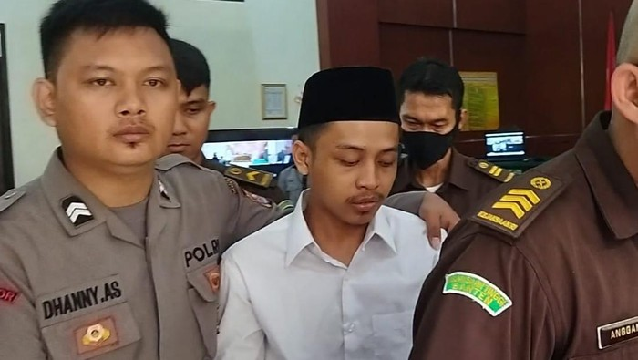

Kekerasan Berbasis Gender Online (KBGO)
Menurut Safe.Net, Di tengah semakin luasnya jangkauan internet, canggihnya perkembangan dan penyebaran teknologi informasi, serta populernya penggunaan media
sosial, telah menghadirkan bentuk-bentuk baru kekerasan berbasis gender. Kekerasan berbasis gender online (KBGO) atau KBG yang difasilitasi
teknologi, sama seperti kekerasan berbasis gender di dunia nyata, tindak kekerasan tersebut harus memiliki niatan atau maksud melecehkan korban
berdasarkan gender atau seksual. Jika tidak, maka kekerasan tersebut masuk dalam kategori kekerasan umum di ranah online.
Bentuk kekerasan online tersebut penting dibedakan agar solusi yang diberikan lebih tepat dan efektif. Jika KBGO yang terjadi, solusinya bukan
semata penegakan hukum, tetapi juga perlu intervensi yang mampu mengubah cara pandang pelaku terkait relasi gender dan seksual dengan
korban. Tanpa intervensi ini, setelah menjalani hukuman, pelaku akan tetap memiliki cara pandang bias gender dan seksual.
Jenis-Jenis KBGO
Sepanjang 2017, setidaknya ada 8 bentuk kekerasan berbasis gender online yang dilaporkan kepada Komnas Perempuan, yaitu
pendekatan untuk memperdaya (cyber grooming), pelecehan online(cyber harassment), peretasan (hacking), konten ilegal (illegal
content), pelanggaran privasi (infringement of privacy), ancaman distribusi foto/video pribadi (malicious distribution), pencemaran nama baik (online defamation), dan
rekrutmen online (online recruitment).
Sementara itu, dalam Internet Governance Forum dipaparkan bahwa kekerasan berbasis gender online mencakup spektrum perilaku, termasuk penguntitan, pengintimidasian, pelecehan
seksual, pencemaran nama baik, ujaran kebencian dan eksploitasi.KBGO juga dapat masuk ke duniaoffline, di mana korban atau penyintas mengalami kombinasi penyiksaan fisik, seksual, dan
psikologis, baik secara online maupun langsung di dunia nyata saat offline.
Siapa saja korban KBGO?
Seseorang yang terlibat dalam hubungan intim, yang terjadi:Melibatkan penggunaan Teknologi Informasi dan Komunikasi (TIK)
untuk ekspresi pribadi, kemudian kontennya dieksploitasi secara publik oleh orang yang terlibat erat dengan hal tersebut
Profesional, yang sering terlibat dalam ekspresi publik; termasuk aktivis, jurnalis, penulis, peneliti, musisi, aktor, atau siapa saja dengan profil publik atau minat dalam pertukaran publik
yang terjadi:Pelecehan, ancaman, pembungkaman melalui pelecehan verbal
Penyintas dan korban penyerangan fisik
yang terjadi:Terlibat dalam kejahatan langsung, contoh: perekaman perkosaan
Perbedaan Gaslighter dengan Manipolator dan Narsisme
Manipulasi adalah bagian penting dari gaslighting, tetapi manipulasi adalah taktik yang cukup umum, dan hampir semua orang mampu menggunakannya sementara gaslighting, dan gaslighter, lebih jarang. Anak-anak mencoba memanipulasi orang tua pada usia dini, dan pemasar bertujuan untuk memanipulasi konsumen, tetapi gaslighting melibatkan pola perilaku kasar dengan maksud tidak hanya untuk memengaruhi seseorang, tetapi juga untuk mengendalikan mereka.
Gaslighting dapat menjadi bagian dari kepribadian narsistik, tetapi itu bukanlah sifat inti dari gangguan kepribadian narsistik . Seorang narsisis mungkin mempromosikan dirinya sendiri dan merasa lebih unggul dari orang lain; seorang gaslighter bertujuan untuk membuat orang lain mempertanyakan harga dirinya sendiri.
Contoh Kasus KBGO
Berikut contoh kasus KBGO yang viral
Alwi Husen Maolana, Pelaku NCII (Non-Consensual Intimate Image Abuse) atau penyebaran konten pribadi tanpa konsen/persetujuan

Divonis 6 Tahun Penjara-Hak Akses Internet Dicabut 8 Tahun. pelaku mengirimkan video asusila korban melalui direct message Instagram ke keluarga hingga teman-teman terdekat korban. Bahkan, Alwi juga mengancam mengirimkan video tersebut ke dosen korban.
Referensi
- Buku Panduan Awaskbgo.id
- https://news.detik.com/berita/d-6821927/perjalanan-kasus-terdakwa-revenge-porn-alwi-hingga-divonis-6-tahun-bui
- https://www.beautynesia.id/life/fakta-kasus-terdakwa-revenge-porn-alwi-husen-maolana-divonis-6-tahun-penjara-hak-akses-internet-dicabut-8-tahun/b-277326